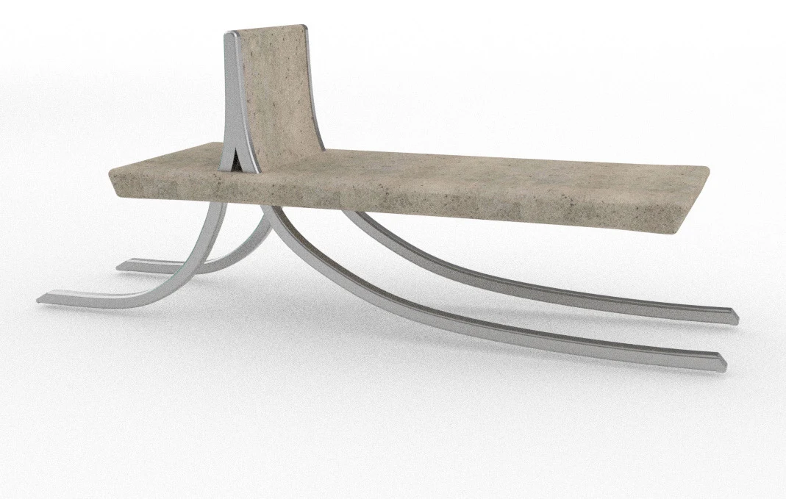
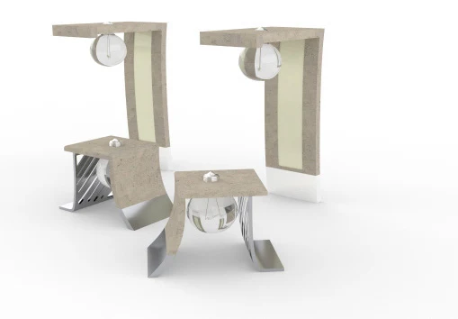
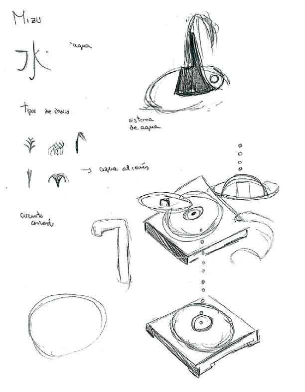

Diseño de producto
Mobiliario
Una propuesta de mobiliario para el Bosque Urbano de Palma. Banco, fuente y luminarias toman los kanjis japoneses como punto de partida formal para habitar el espacio público.






Diseño de producto
Una propuesta de mobiliario para el Bosque Urbano de Palma. Banco, fuente y luminarias toman los kanjis japoneses como punto de partida formal para habitar el espacio público.


